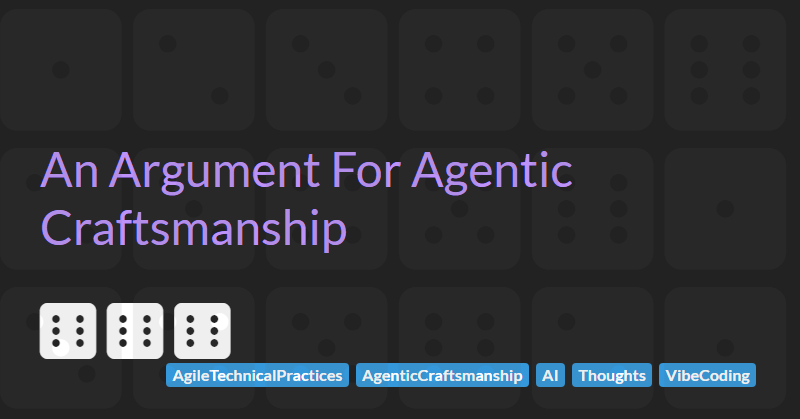

An Argument For Agent Craftsmanship

If you are reading this, then an agent is probably writing a significant portion of your code already. Maybe, like me, you think that the tooling has evolved much faster than our collective understanding of how to use it well in a delivery team. By which I mean adding value faster without giving up quality. I have felt that most of the guidance so far has been about getting more out of the agents, rather than what they change about the way you work. If that sounds familiar, you are probably shipping more than you used to. Just not by as much as the hype promised, and with more of the gain going back into fixing bugs that you accidentally shipped.
It is worth being precise about what has actually changed, because it comes down to one main change rather than many. A developer used to decide what to build, design it, write it, test it, and either pair with a colleague throughout or hand it off to review at the end. Now, in the age of Agentic Software Development, an agent does the coding. The tests are code, so the agent writes those too. And because it produces far more change than a person can read, agents have started taking on part of the review as well. The deciding, the accepting and the answering for it when it breaks all stay exactly where they were. So the person moves from author to specifier and reviewer, and a lot more code gets written. That is the promise: typing is taken to be the constraint, so removing it ought to multiply what a team can deliver.
There is a real argument that this one change is enough to overturn everything else, and that Software Craftsmanship is one of the things handing authorship to an agent makes redundant. Some argue that this is simply the next rise in abstraction, with code becoming the new assembly: written by machines, read by nobody, and judged only by whether it runs. Nobody hand-tunes assembly today, and nobody mourns the craft that went with it. Plenty of capable people hold some version of this, so it deserves consideration rather than dismissal.
So does craft still matter once a machine is writing the code, or is it just sentiment about a job that has already moved on?
First, a retraction of my own. I have previously stated that agents write better code when the code around them is clean. I held this view from practical experience with older models, backed up by research that does find the effect in less capable ones. The best controlled test of it I know of does not find that effect in the strongest models available today. Sonar built matched pairs of repositories, degrading the clean ones and cleaning the messy ones while keeping the tests working, and ran 660 trials: "code cleanliness does not change the agent's pass rate". What it did change was cost. The agent went back to the same file about a third less often on clean code, and roughly half as often on work spanning several modules, using 7 to 8% fewer tokens. Agents work more cheaply in clean codebases, and structure matters where surface tidiness does not.
If the finding on outcomes is to be believed, then one of the main, obvious reasons to care about craft has gone, replaced by reduced cost, which is useful but perhaps not as valuable as I had stated. Despite what the recent research says about clean code and outcomes, my answer is that craft matters more than it used to, for a reason that has nothing to do with how well anything reads, and that holds regardless of how capable the models become.
To explain why, it is worth going back to the problem Software Craftsmanship was invented to solve. The Manifesto for Agile Software Development arrived in 2001 and told teams how to organise their work, while deliberately saying nothing about how to build the software. It did not need to. Kent Beck had set out the technical practices two years earlier in Extreme Programming, and he was one of the people who signed the manifesto. The assumption was that teams would take both. Most took the process alone, moved quickly for a few months and then slowed to a crawl. Martin Fowler called the result Flaccid Scrum.
Software craftsmanship was the fix agile needed. It insisted that the technical practices were not optional extras, and that responding to change counts for little unless you can keep adding value while you do it. Agility is a property of the codebase before it is a property of the process. And its practices all have one thing in common: test-first, refactoring, simple design, pairing and continuous integration are ways of finding out sooner whether a decision was any good. They are feedback mechanisms, and feedback is what lets a codebase keep absorbing change.
Every one of those mechanisms depended on a person being the author. Hand authorship to an agent and three separate things go with it. The first is ownership. Extreme Programming made it collective on purpose: anybody could change anything, because pairing and rotation meant everybody had written enough of the code to be trusted with the rest. Ownership rested on authorship, and it was spread deliberately. It was also what disciplined the work, because the person who owns the code is the one who has to work in it the next day, who gets paged when it breaks, and who has to defend it in review. Hand the writing to an agent and the team owns a codebase none of them wrote. The responsibility stays exactly where it was and the thing underneath it has gone. An agent owns nothing. It has no next day, never has to live with what it wrote however messy, difficult to understand or impossible to extend it turns out to be, starts each session with no memory of what it built, and receives no signal but whether the tests pass. The person supervising the agent is not immune either: accepting generated work appears to erode the feeling of ownership as well as the basis for it. The name for this in the technical literature is cognitive debt.
The second is understanding, which arrived with ownership and is not the same thing. Authorship supplied the two together, which is why nobody needed to separate them, but they come apart now: a team can own code that none of its members has read. Ownership is who carries the cost of the code's state. Understanding is who holds a mental model of the code. Nobody could type a module without building that mental model on the way through, and craft practice was quietly resting on it. Lose that mental model and you are approving work you could not have produced and cannot fully picture. The judgements craft asks for, whether a design is simple enough or an abstraction earns its place, assume somebody went through the alternatives and rejected them. Nobody on the team did.
Reviewing the code afterwards, assuming you are still doing that yourself and not handing part of it to an agent as well, is not the same thing, and I think that gets waved away too easily. A diligent reviewer does understand what they approve, but they understand what was built and not what was considered and discarded on the way, and they can accept something plausible without ever holding the whole shape in their head. That is enough to catch a local error. It is not enough to notice a design drifting, which is why refactoring loses its trigger even on teams that review everything, and why test-first stops applying design pressure when the same agent writes both halves. That leaves review holding the whole job, limited by how much a person can read and understand.
The third is pushback. Writing the code was never only production. It was the act that pushed back on the specification, because implementing forces you through every case the description waved at, and that is where you find the requirement contradicts itself or the edge case has no sensible answer. Hand the implementation over and nothing pushes back at all. It is read, interpreted and satisfied. A person given a thin description comes back with a question. An agent fills the gap and carries on. Laban and colleagues measured this in LLMs Get Lost in Multi-Turn Conversation: models "often make assumptions in early turns and prematurely attempt to generate final solutions, on which they overly rely", and "when LLMs take a wrong turn in a conversation, they get lost and do not recover". The guess is made early, it is never surfaced, and everything after it is built on top. So the first real test of the intent is the behaviour turning up in front of a user.
None of this is an argument for doing less with agents. It is an argument about what has to be put back, and why it will not come back by itself. A team that cannot own, understand or question the code it ships is not a fast team, although it may look like one for a while. Initially throughput may go up, cycle time may go down, the tests stay green and the stories keep closing, because every one of those measures how fast work leaves the team rather than what state it leaves the code in. Over time the same numbers slow down again, as the design drifts unnoticed and modules become difficult to work in because the abstractions underneath them were never right. The bill arrives later: rework on features that were signed off months ago, incidents that take a day to diagnose because nobody can say what the code was meant to do, and routine changes that cause massive churn, tearing through hundreds of files because the design has no boundaries to contain them.
Astute readers will no doubt already have spotted the similarity between what I have described above and the gaps in Agile. Software Craftsmanship was the answer to fixing Agile. By reintroducing the technical practices, it allowed Agile teams to deliver value faster and to keep doing so over time. Agentic Software Development has opened up different gaps, and they need addressing if the promise of development accelerated by AI is going to be realised beyond the first initial speed-up. The deliberate practice of closing those gaps is what I mean by Agentic Craftsmanship. It is what lets a team keep delivering value and hold its pace a year in, rather than losing the benefits of agentic development to bug fixes and rework. I will set out the practical shape of Agentic Craftsmanship later in this document. But first it is worth looking at what has already been tried, because a good deal of it is aimed at the right problem and still does not close the gaps.
I am not the first to notice these gaps. Anybody who has run an agent on real work has hit the same walls, and people have been building answers to them for a couple of years. I categorise the solutions being built to address these gaps into a taxonomy of four groups. Workflow frameworks put a process around the agent. Skill collections try to teach it how to behave. Vibe coding tools let a builder produce a working solution without worrying about the code, or ever reading it. Software factories are an evolution of all three, delegating the engineering to agents and taking the human out of the loop as far as they can.
The workflow frameworks are the most visible: BMAD METHOD, GitHub Spec Kit, GSD and AWS's Kiro. They take the work through a fixed sequence of phases, each producing a document the next one reads, so that by the time an agent writes anything the decisions have been made and written down where it can find them. Alongside them sits a quieter body of work in shared skill collections, including obra's superpowers, Matt Pocock's skills and Addy Osmani's constraint-driven-development. These are libraries of instructions an agent loads when it judges them relevant, covering how to approach a task. They are typically assembled from what their authors learned by watching agents get things wrong. At the other end of the scale are the vibe coding tools, Lovable, Base44 and Replit, which turn a description into a running application and are built for people who will never read the code.
The software factory is the newest of the four in practice and the noisiest. The term is old, defined by R. W. Bemer in 1968 as "a programming environment residing upon and controlled by a computer, with measures and controls for productivity and quality", and the industry has attempted it and abandoned it several times since. The agentic version is a different proposition: a pipeline where work enters as a specification, agents do the building and the checking, and code comes out the far end without anybody reading it on the way. The ambition at the end of that is the dark factory, borrowed from manufacturing plants that run with the lights off because no humans are on the floor, meaning software delivery with no person in the loop at all. It is also the hardest of the four to examine, because most of what exists is secret sauce: built inside one company, for one company's use case, and not published. Tessl is the most serious public attempt I have found, and its Head of Product reports that their own factory "peaked at around 850 pull requests in a single week with 85 to 90% of them handled by agents end to end".
All four groups are a serious response to real problems with out-of-the-box Agentic Software Development. But none of them address all of the problems I have raised so far, and many introduce additional problems.
The first problem I see is with the workflow frameworks and their demand for significant up-front specification. The problem they are trying to solve is context. An agent needs a great deal of it to work well, and it needs the edge cases thought about in advance. Natural language is vague, and an agent handed an ambiguous instruction will usually resolve it arbitrarily rather than ask for clarification. The frameworks' answer is to settle everything first: a specification, a technical plan and a task breakdown, all argued out in slow, deeply technical detail before any code is written.
I have first-hand experience of the frustration this over-specifying causes. I have sat in BMAD scoping sessions that ran for days on features that were not especially complicated. The agent worked all the way down, from the architecture and how each piece would be unit tested to the CSS. Every one of those decisions was settled before a line of code existed to check it against. That is waterfall with an agent at the end of it. The failure mode is the one Agile was created to escape. The decisions that are hardest to get right are made at the point of least knowledge, before anybody has built enough to find out what the problem really is. Nothing tests them until the work is underway. By then the assumptions that turned out to be wrong are buried in a specification, a plan and a task breakdown, and correcting one of them means revisiting all three. That is expensive and slow. The further ahead the decision was made, the more there is to unpick. This is exactly why teams stopped working this way.
The second runs across the workflow frameworks and the skill collections alike: almost every one of them assumes a single developer working alone. The plan lives in a file, the state lives in a file, and the workflow moves one person through one set of phases. Put two people on it and they overwrite each other's working notes on a shared branch, which is collective ownership and continuous integration failing at the level of the process itself. That is not an oversight so much as an origin: these were built by individuals solving their own problem, and it shows the moment a team picks one up. The vibe coding tools have a version of the same problem, where generally only one person can be making changes at a time. What is missing is not a feature. It is the whole question of how multiple people and multiple agents work on the same codebase at once.
The third problem is trying to use vibe coding tools to build production-grade software. The decisions that matter most once a thing is live are made by the generator and reviewed by nobody: the data model, how users are authenticated and what they are allowed to reach, where the data sits and who else can get at it. There is rarely a test suite worth the name, and no pipeline to run one in. When something breaks in front of a customer, the only repair available is to describe the problem to the tool again and hope. That often breaks something seemingly unrelated somewhere else in the system, and with no test suite the only way to find it is laborious manual testing. The escape route is to export the code and bring in engineers, which does work, but it hands a team a codebase nobody wrote and nobody can vouch for.
These tools do have a legitimate use. For a prototype, a demo, or an internal tool, generating an application from a description and never reading the code is a reasonable trade-off, provided the thing is short-lived and nobody will have to maintain it. I would make that trade-off myself. But that is not how they are often sold. The pitch is that anybody can build real software now, and that an engineering team is a cost you no longer have to carry. What is being sold there is the prototype trade-off, offered for work where none of its conditions hold.
The fourth problem is the dark factory. A software factory with people still reviewing what comes out is a reasonable thing to build: the automation takes the repetitive work, the checks catch what checks are good at, and somebody who will have to live with the result still decides what ships. But take the human out of the review side and replace them with another agent, and the factory's machinery is now the only thing standing between a generated change and production. Defenders of the dark factory pattern will say, correctly, that this machinery is substantial: guardrails, agentic reviews, and a pipeline that will refuse a deployment if any of its checks has not been satisfied. That is real scrutiny, and it will catch things a tired reviewer would miss.
There is evidence that this machinery is not enough on its own, and the most useful of it comes from someone who built a factory and ran it. Dex Horthy's company ran agents unsupervised in 2025 and spent weeks repairing the damage afterwards. His account, Why Software Factories Fail, names the limitation plainly: models "can't maintain and improve codebase quality over time" without "a decent amount of human steering", and agent-built codebases "start to struggle after maybe three to six months". He treats that as a limitation of today's models, to be closed by better context engineering and by models that improve, and his lever is the plan and the research notes rather than the code.
I agree with his account of what goes wrong, but I disagree that more planning will solve it. Better plans walk straight back into the up-front design trap above, with the same slow scoping sessions and the same decisions made furthest from the evidence. And I do not think waiting will fix it either, for a reason Horthy himself sets out. Models are trained against benchmarks that score one thing: did you fix what you were asked to fix. As he puts it, "there is no penalty for eroding codebase maintainability". Nor can there easily be one, because "tests give you feedback in seconds, but the cost function of bad architecture is measured in weeks, months, maybe even years", which is far too late to train against. So models have got better at one-off problems and may well keep getting better at them, while the state they leave the codebase in, which nobody is optimising for, stays exactly where it is.
Bemer's definition of a factory asked for measures and controls as well as automation. The agentic software factory has the automation. What it needs are better measures and controls. And until it has them, the dark factory is in the same position as vibe coding: a codebase nobody has read and nobody can vouch for.
A fifth problem relates to how the agent is instructed, and it runs through the frameworks, the skill collections and the factories alike. All of them tell the agent what to do in plain English prose, via skills or other context. This is not a problem in itself, as this is how agents are instructed. The complaint is that almost nobody tests whether the prose works. A skill is an instruction handed to a reader that complies literally, does not notice when one rule contradicts another, and treats the whole thing as context. Whether a particular instruction produces the behaviour its author intended is a question with an answer, and it can be answered by running the agent against the skill and grading what comes back. Hardly anybody does it, which also means hardly anybody finds out when an instruction that worked last quarter stops working because the model underneath it changed.
The other half of the same problem is what these approaches leave out. Deterministic checks and hooks, the things that stop an agent doing something rather than asking it not to, are barely used. A rule in a document is a hope, because an agent may follow it or may not. The same rule in a check that runs on every change is a fact, and the feedback loop is immediate, letting the agent correct itself before anybody else has to.
The practical shape of Agentic Craftsmanship follows from all of the above. Primarily, it has to answer the gaps created by handing the coding over to agents, and each of the three is answered differently. Ownership used to discipline the work because the author had to live with the code. An agent does not, so the discipline has to come from somewhere else: checks that fail on every change, so that work which degrades the codebase never gets merged. Understanding is rebuilt by changing how the agent works, so that what it produces can be followed in review: small changes in a deliberate order, and a hard line between changes that alter behaviour and changes that only rearrange the code. Pushback is not recoverable, but its absence can be made safe: pin the expectation before the work starts, forbid the agent from editing that expectation, and require the agent to stop and ask when the expectation turns out to be wrong.
Agentic Craftsmanship also has to avoid the traps the other approaches fell into. Enough definition at the moment of starting rather than a specification argued out weeks in advance, so that the design can still change as the work teaches you something. Built for a team, capable of supporting multiple people and multiple agents working in the same codebase, rather than one developer with a plan file. A person still in the review path and still accepting the work. A reviewer is the only part of the system that can notice that the code is correct and still wrong: that it solves a problem nobody has, that the abstraction will not survive the next story, that the whole thing is harder to follow than it was last month. Skills that have been evaluated, so that an instruction is known to produce the intended behaviour, and evaluated again when the model changes. And deterministic hooks for the things that must not happen at all, because an instruction is a hope and a check is a fact.
All of that is only available where the code allows it. A check has to have something to attach to: a seam you can observe behaviour at, a type that can be wrong, a module boundary a tool can police, a test suite fast enough to run on every change. Badly structured code offers none of those, which is why it cannot be harnessed. So the claim underneath all of this is narrower than "clean code is good", and much harder to argue with. Well-made software is better context for an agent because it is easier to verify. So craft is not the thing a team gives up to go faster. It is what lets the checks exist at all, and what lets a reviewer follow a change without holding the whole system in their head. Agents produce more than anyone can check by reading, so most of the checking has to be automatic. What is left over is judgement, and craft is what keeps that judgement quick enough to keep doing on every change.